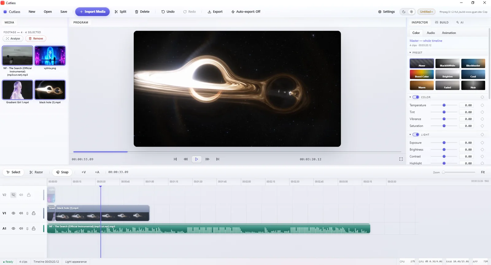
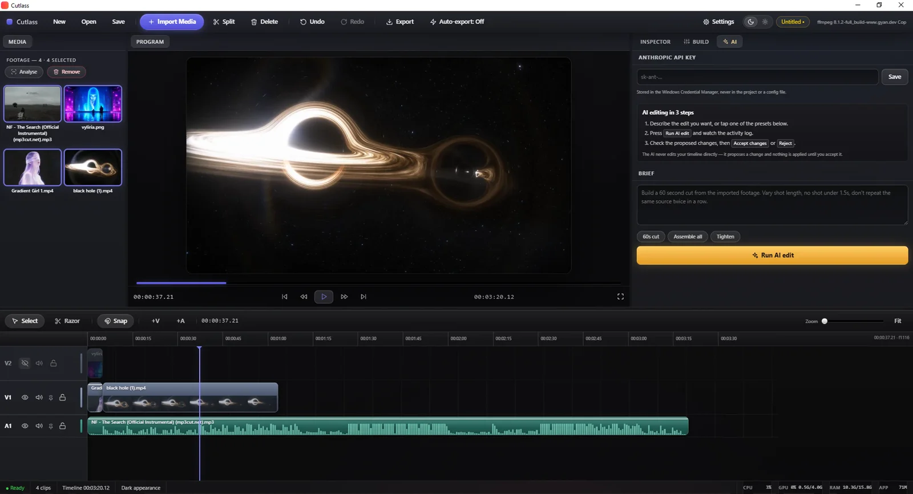
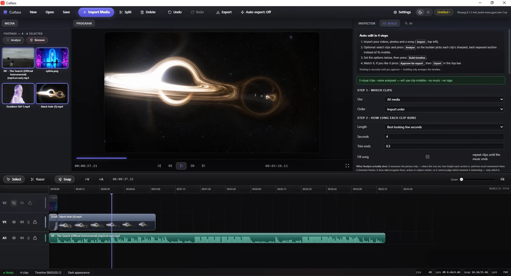

Case study — Desktop video editor
Built from scratchCutlass — the AI and the editor hold the same controls.
An AI-first desktop video editor. Not an AI panel bolted onto someone else's app, and not a wrapper that fakes clicks — my own editor, my own Rust core, where the AI and I reach for the exact same controls. It already cuts, trims, grades and exports; I'm holding the release until the AI is trained across several editing styles.
A real editor first
It has to be good with
the AI switched off

Multi-track timeline, razor and snap, a program monitor, and an inspector with transform, compositing, speed and animation. Everything a person needs to cut a video by hand — because you can't fix the AI's mistakes without a real editor, and an editor that's only good when the AI is good is a toy.
The idea
One set of controls,
two operators
Every edit in Cutlass — split, trim, move, grade, delete — is a single command in one registry. The interface fires those commands. The AI fires the very same ones. There is no second, private path for the machine. So anything I can do, it can do; anything it does, I can undo.
That one decision is the whole product. Undo, history, scripting and true AI parity all fall out of it — instead of being four features bolted on afterwards.
The human
Clicks a button, drags a clip, types a value in the inspector.
The AI
Calls the same commands as tools — no screen-scraping, no puppeteering.

Grading
One-tap looks, or every dial by hand.
Grade presets for a fast pass — then temperature, tint, vibrance, exposure, contrast and highlights underneath when you want to place it exactly. The same controls the AI can reach, so a look it applies is one you can nudge afterwards.

The AI Director
Describe the edit. Review the result.
Write a brief — "build a 60-second cut, vary shot length, don't repeat a source" — and the Director plans and builds it with the same commands. Crucially, it never touches your live timeline: it proposes a changeset you accept or reject, clip by clip. It can be wrong without being dangerous, which is what makes autonomy shippable.

No key required
A deterministic auto-edit, no AI needed.
There's a second path that needs no API key at all: pick the clips, a length rule and a trim, press build. An Analyse pass scores each shot for sharpness, exposure and motion, so it cuts on the best part of a clip, not the middle. Same seed, same result, every time.
Where it stands
Finished enough to use —
held back on purpose
Cutlass already works like any other editor. The reason it isn't out is not that it's broken; it's that the goal is bigger than "an editor with an AI button".
Usable today
Import, cut, grade, auto-build and export all work, on a mid-range machine.
Built from scratch
My own Rust core and interface. No forked editor, no borrowed codebase.
In training
Teaching the AI several distinct editing styles, not one generic cut.
The aim
An editor that automates the whole job — genuinely unique, and problem-solving.
Why there's no download here. A tool that edits for you is only worth shipping once it edits well across styles. I'd rather hold it until that's true than release one more AI gimmick.
Next
Want a
closer look?
Happy to walk through the architecture, the command bus, or a live edit.